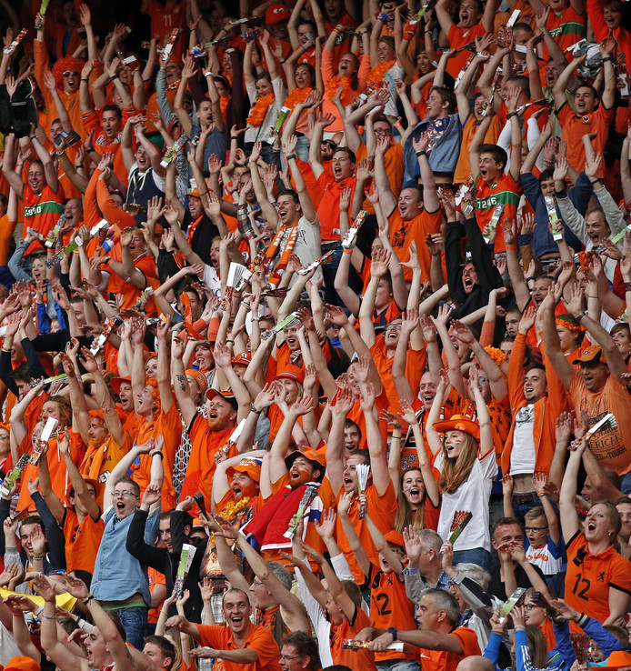

We zijn trots op onze sporters...tot ze verliezen.

We zijn er niet bij, straks op het WK Voetbal in Rusland. Dus zijn we boos, want Nederlanders zijn slechte verliezers, ziet onze columnist Thijs Zonneveld.
De buurman is boos. De postbode is boos. De mevrouw in de rij bij de kassa is boos. De jongetjes op het pleintje om de hoek zijn boos. @henk1962 is boos. Alle leden op de facebookpagina van fanfarevereniging De Blauwe Blokfluit zijn boos. Laten we wel wezen: we zijn allemaal boos. Op een stel spelers in een oranje shirt, op Dick Advocaat, op Danny Blind, op Hans van Breukelen, op de KNVB en op een paar Luxemburgse houtjetouwtjevoetballers (,,De volgende keer tanken we verdomme gewoon in België!"). Wij, Nederlanders, zeggen over onszelf dat we zo nuchter zijn. Wie dat heeft verzonnen weet ik niet - maar hij was waarschijnlijk starnakel dronken. Als er één volk níet nuchter is, dan zijn wij het wel. We slaan elkaar de hersens in over de vraag of er roetpieten in het Sinterklaasjournaal mogen, er worden Kamervragen gesteld over een treinconducteur die reizigers aanspreekt met 'reizigers' en bij twee nachtjes vorst aan de grond lijden we massaal aan de Elfstedenkoorts. Bij sportwedstrijden hossen we met z'n allen rond in een oranje overall en een bos wortels op ons hoofd - en zingen we van je olé olé olé wij zijn de kampioen.
Afzeiken We hebben, net als in andere landen, net als op andere continenten, behoefte aan verbondenheid. Maar we hebben zo weinig factoren die ons binden. De grenzen vervagen, de wereld wordt kleiner. We zijn rijk, we leven vrijwel allemaal achter onze eigen voordeur en onze eigen dichte gordijnen. Er is geen oorlog, er zijn nauwelijks gezamenlijke vijanden. Sport verbindt ons wél. De successen van Nederlandse sporters zijn vaak de enige momenten dat we het Wilhelmus zingen, dat we ons in het oranje kleden en dat we wérkelijk beseffen dat we Nederlander zijn. Als het Nederlands elftal het WK Voetbal niet haalt worden we geraakt in onze trots, in onze hang naar verbondenheid. En als we dat samen niet kunnen voelen in het vieren van succes, dan maar in het samen afzeiken van de verantwoordelijke sporters. Winnen doen we samen met ze. Verliezen doen ze alleen.